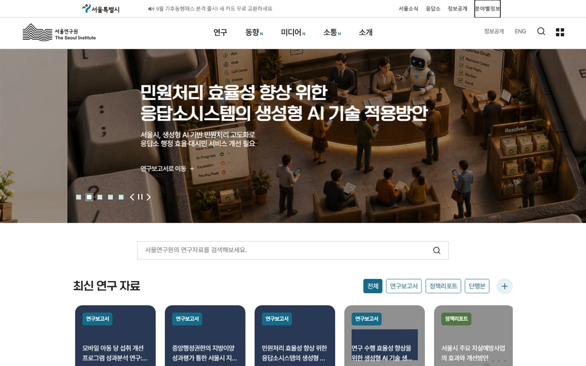
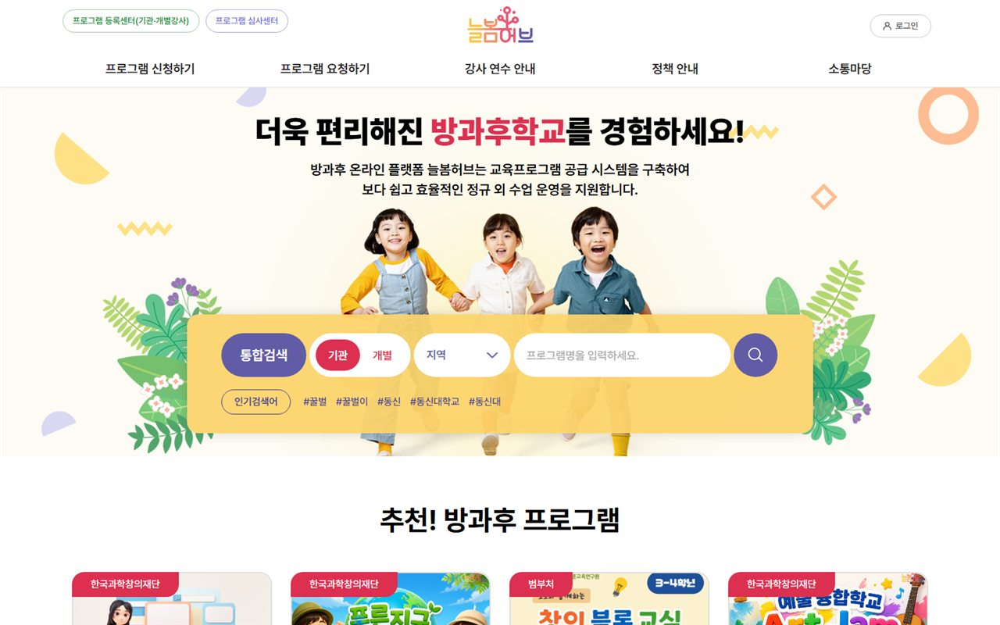
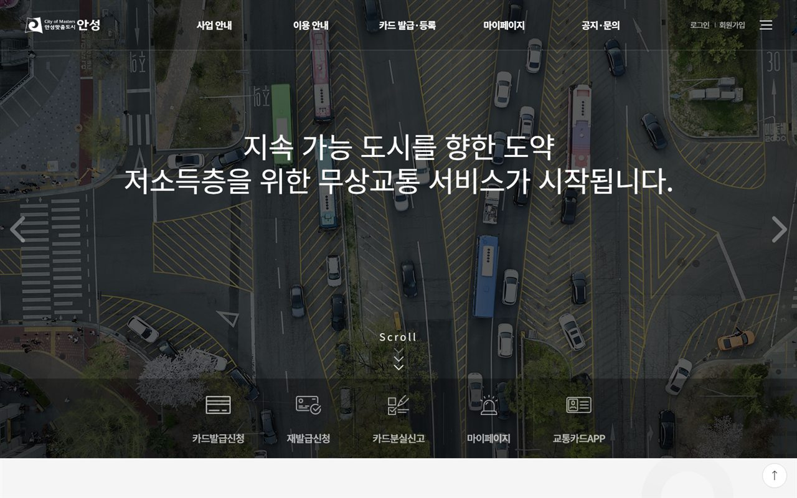
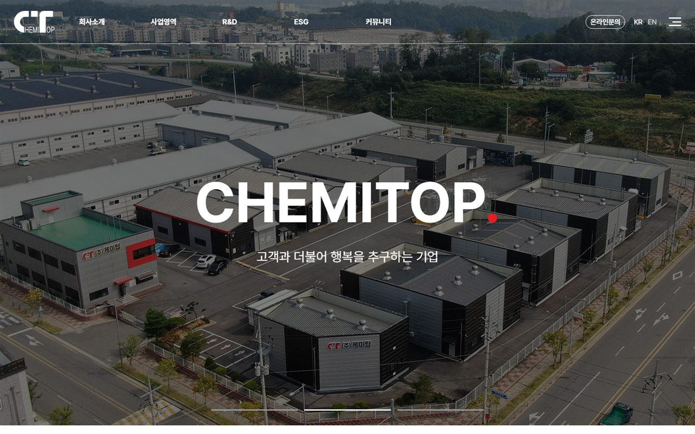

맡은 프로젝트는 오픈과 안정화까지 마칩니다.
요구사항 분석부터 설계, 구현, 배포, 운영까지 맡아 왔습니다.
전임자와 문서가 없는 시스템도 소스 분석부터 시작해 안정화했습니다.
공공, 교육, 문화, 제조 도메인의 웹 시스템을 요구 분석부터 구축과 운영까지
정산 기능의 데이터 정합성 검증
문서 없이 넘겨받은 레거시의 분석과 전환
서비스 중단 없는 반영과 폐쇄망 환경의 운영
신의
백엔드 3년 9개월, 재직 중
Java, Spring Boot, 전자정부프레임워크, MyBatis, MySQL, Linux
요구사항 분석부터 설계, 구현, 배포, 운영까지 맡아 왔습니다.
전임자와 문서가 없는 시스템도 소스 분석부터 시작해 안정화했습니다.
기록한 오류가 다시 나지 않게 개발 단계에서 막고, 프로젝트마다 조치한 취약점은 다음 프로젝트에서 미리 점검합니다.
운영에서만 확인되는 기능은 운영과 최대한 같은 개발 환경을 만들어 미리 테스트합니다.
반영 전에는 원복 방법을 먼저 준비하고, 문제가 생기면 원복해 서비스를 정상화한 뒤 원인을 고쳐 다시 반영합니다.
"이 화면이 느리다", "숫자가 이상하다" 같은 요청을 받으면 실제로 필요한 것이 무엇인지 먼저 정리합니다.
화면과 데이터 구조, 처리 순서로 정리한 결과를 보여 드리고 확인받습니다.
같은 내용을 여러 번 묻지 않기 위해서입니다.
설명할 때는 개발 용어 대신 고객이 쓰는 말을 쓰고, 요청 문구보다 고객이 원하는 결과에 맞춰 만듭니다.
메뉴, 권한, 정산 기준처럼 운영 중에 바뀌는 값은 설정과 데이터로 분리해, 코드를 수정하지 않고 바꿀 수 있게 합니다.
기능은 모듈 단위로 나눠 한 곳을 고쳐도 다른 기능에 영향이 없게 합니다.
사내 CMS의 메뉴, 게시판, 팝업, 배너도 이런 모듈 단위로 나눴습니다.
제조 현장에서는 컴퓨터에 익숙하지 않은 작업자를 위해 버튼과 글자를 키웠습니다.
두 번의 조작으로 원하는 정보를 볼 수 있게 하고, 입력 순서를 실제 작업 순서에 맞췄습니다.
다만 AI 코드는 100% 정답이 아니고 책임은 제게 있습니다.
그래서 AI가 바꾼 코드는 diff로 직접 확인한 뒤 반영합니다.
어떤 작업을 AI에 맡길지 실측으로 기준을 세웠습니다.
결과물을 여러 AI가 서로 검증한 뒤에야 통과시키는 절차를 만들어 사내에 정착시켰습니다.
지금은 작업 세션 2개와 검증 세션 1개, 이를 관리하는 PM 세션 1개로 나눠 진행합니다.
반복 구현을 AI에 맡겨 확보한 시간으로 GitLab CI/CD와 Docker 기반 자동 배포 개발 서버를 만들었습니다.
다음 프로젝트의 개발 환경 구성도 맡았습니다.
운영과 같은 환경에서 검증한 뒤 반영한 사례입니다.
직접 구축하거나 운영한 사례 다섯 건입니다.
펼치면 문제, 접근, 해결, 성과를 볼 수 있습니다.

Java, Spring, MyBatis, MySQL, Oracle, 데이터 이관

Java, Spring, MyBatis, 역할별 화면, AI 기반 개발
| 항목 | 작업 전 | 작업 후 |
|---|---|---|
| 톰캣 | 4개 | 6개로 분리 |
| 첨부 저장소 | WAS 추가 디스크 | NAS 1,000GB |
| 자동 기동 | 없음 | 아파치, 톰캣 6개 |
| 로그 정리 | 일부, 최대 72GB | 전체 순환 |
| DB 백업 | DB 한 개 | DB 두 개 |
Naver Cloud VPC, Rocky Linux, Tomcat 9, Apache, mod_jk, MariaDB, NAS

Spring Boot, Docker, Naver Cloud Kubernetes, 외부 API 연계, 정합성 검증

PHP, CodeIgniter3, MySQL, MariaDB, Google Charts, 현장 UX
다른 회사와 함께 개발하면 반영 지점이 대여섯 곳이 됩니다.
상대 회사 개발 서버, 발주 기관 개발 서버, 운영 서버에 관리자와 사용자 DB 분리까지 겹치기 때문입니다.
수정하는 모든 DDL은 컬럼이 있든 없든 몇 번을 실행해도 같은 결과가 되게 작성했습니다.
그래서 같은 DDL 세트를 어느 환경에 먼저 실행하든, 몇 번 실행하든 같은 스키마가 됩니다.
반영 지점이 6곳이던 프로젝트를 스키마 불일치 없이 마쳤고 이후 협업 프로젝트에도 같은 방식을 씁니다.
공공과 문화 사이트를 만들 때마다 메뉴, 게시판, 팝업, 배너를 다시 만드는 비효율이 있었습니다.
반복 기능을 Laravel 기반 CMS로 구조화했습니다.
데이터가 바뀔 때만 캐시를 자동으로 최신화하게 설계했습니다.
관리자가 쓰기 쉬운 재사용 솔루션으로 정리했습니다.
2026년 4월에서 5월 사이에 만들었습니다.
구축 17건, 동시 운영 11건, 스마트공장 MES 7개 제조사.
2023년 1월부터 맡은 프로젝트입니다.
최근 것이 위에 있습니다.
공공, 교육, 문화 사이트의 구축과 개발.
| 기간 | 프로젝트 | 내용 |
|---|---|---|
| 2026.10 ~ 진행 중 | 창업진흥원 원스톱(K스타트업) | 상담플랫폼 기능개선을 단독 개발 중. 기획예산처와 같은 Java CMS 코어로 소스를 구성하고 MariaDB로 전환. 업무 테이블 40개 설계, 관리자 상담관리 개발. Java 21, Spring Boot |
| 2026.08 ~ 진행 중 | 충북테크노파크 재구축 | PHP 기반 기존 사이트를 기획예산처와 같은 Java CMS 기반으로 재구축. Java 21, Spring Boot, MariaDB, UTF-8. 조달청 입찰과 계약, 그룹웨어 회의실 예약 연계. 기획예산처 고도화와 병행 |
| 2026.07 ~ 진행 중 | 기획예산처 고도화 | 기획재정부에서 분리 신설된 부처의 사이트 고도화를 단독 개발 중. Java 21, Spring Boot 3.5, 전자정부프레임워크 5.0, WildFly, CUBRID. GitLab CI/CD, Runner, Docker 기반 자동 배포 개발 서버 구축. 회사의 인정을 받아 다음 프로젝트 개발 환경 구성 전담 |
| 2026.06 ~ 진행 중 | 세종시문화관광재단 (세종미식, 한글 비엔날레) | 세종미식 누리집 개편과 이어진 기능개선, 2026 한글 비엔날레 사이트 개발, 백엔드 전담. 미식 사이트 소스 취약점 점검 지적 사항 전부 조치. 2026.10 재단 4개 사이트 운영 서버 이관 작업을 단독 수행해 톰캣 분리, 자동 기동, 로그 순환, DB 백업 구성 |
| 2026.05 ~ 진행 중 | 늘봄허브 | 학교 만족도 조사 21개 화면 단독 개발, 역할별 메뉴와 데이터 분리, 계약 입력 개편. 2026.07 운영 오픈. 이 프로젝트부터 AI 기반 개발을 전면 적용. 운영 중 수정 요청 대응 |
| 2026.04 ~ 05 | 사내 Laravel CMS | 메뉴, 게시판, 팝업, 배너 등 반복 구축 기능을 표준화한 사내 솔루션. Laravel 12. 데이터 변경 시점에만 캐시를 자동 최신화 |
| 2025.12 ~ 2026.04 | 바이오코리아 | 오픈 직전에 투입돼 결제 기능의 보안 조치와 안정화. 일정 내 마무리 |
| 2025.09 ~ 2026.03 | 음성 화훼 통합정보 | 앱, 관리자, 사용자 3개 사이트로 구성된 통합정보시스템 신규 구축. 사이트 분석부터 오픈까지 수행. 농가별 통계와 엑셀 업로드, 제약조건 기반 무결성 데이터 적재 |
| 음성 화훼와 병행 | 창업진흥원 창업기업 확인시스템 | 진행 중이던 기능개선 사업에 지원으로 투입. 두 프로젝트를 동시에 수행. 요구사항 변동이 많은 사업에서 감리 통과 |
| 2025.07 ~ 08 | 경기도 장애인체육회 | 관리자 교부금 기능 담당. 사이트관리자, 기관관리자, 회계사 3개 권한별 역할 배정 기능 설계와 개발. 1개월 미만의 일정과 설계 담당 PM 교체 상황에서 후임자와 소통해 일정 내 완수 |
| 2025.06 ~ 07 | 충북 늘봄학교 기능개선 | 사용자, 관리자, 강사 페이지로 구성된 방과후 시스템 기능개선. 금액 관련 수치 불일치 문제를 중점 분석하고 수정해 정산 데이터 정합성 확보 |
| 2025.06 ~ 07 | KMF (WordPress) | 건강기능식품 홍보 사이트. 카페24 환경의 트래픽 이슈 대응, PDF 구글 드라이브 연동 뷰어와 QR코드 생성 기능 |
| 2025.03 ~ 06 | 세종 한글문화도시센터 | 사용자와 관리자 사이트 전반 개발 주도, 신입 개발자의 기능 이관 작업 가이드 |
| 2025.01 ~ 08 | 제천시립도서관 | 사용자, 관리자, 통합검색 3개 컨테이너 중 사용자와 관리자 페이지 담당. 예약 기능 중심. 통합검색 담당 신입 기술 멘토링을 병행하며 일정 내 오픈 |
| 2024.10 ~ 2025.01 | 서울연구원 | PHP 드루팔 사이트를 Java Spring Framework로 전환 구축. 기존 DB 마이그레이션, 외부 제공 API 개발, DB 최적화, 인사팀 DB 연동 조직도 자동화 |
| 2024.04 ~ 07 | 충남개발공사 계약정보공개시스템 | 계약정보공개시스템 신규 구축과 최초 배포. 전자정부프레임워크, MySQL과 Oracle 다중 DB 연동 |
| 2024.04 ~ 05 | 아트코리아랩 | 예술가 대상 공간과 장비 대여 사이트. 퇴사한 개발자가 맡던 프로젝트를 이어받아 예약 기능, SNS 로그인 등 남은 요구사항을 마무리까지 개발. 디자인팀과 협업해 퍼블리싱 다수 |
맡은 시스템의 분석부터 안정화까지.
| 기간 | 시스템 | 내용 |
|---|---|---|
| 2025.10 ~ 2026.09 | 교통비 정산 시스템 (안성, 제주) | Spring Boot 기반 무상교통 정산 SaaS 유지보수에 재투입, 제주도 사업까지 확대 운영. 외부 기관 IP 허용을 받아 운영 재현 검증 환경 구축. Docker 이미지 패키징, Git CI와 Naver Cloud CD 운영 |
| 2025.07 ~ 2026.09 | 예술의전당 | 타사 이관 사업을 인수해 소스 분석 후 운영. 예약, 이벤트, 회원등급 등 다기능 사이트, PostgreSQL. 무중단 운영 요구에 맞춰 서비스 중단 없이 반영 |
| 2025.06 ~ 07 | 충북 늘봄학교 | 알림톡과 앱 푸시 관련 이슈 대응과 운영 |
| 2025.02 ~ 2026.09 | 서울연구원, 서울정책아카이브 | 직접 구축한 사이트의 유지보수 연장. SSL 인증서 교체, 외부 수신 API 이슈 대응 |
| 2024.06 ~ 07 | 교통비 정산 시스템 (안성) | Spring Boot와 Docker 기반, Naver Cloud 연동 Git CI/CD 환경에서 배포와 운영. 운영 중 이슈 대응 |
| 2024.05 ~ 07 | 국립부여박물관 | 노후 시스템 제약 안에서 요구사항 대응, 게시판 태그 검색 이슈 해결, 웹 접근성 개선 사업 |
| 2024.02 ~ 07 | 청남대 | 형상관리가 안 된 사이트를 인수. 도청을 방문해 운영 서버에 직접 반영. 파일 비교와 검증 절차를 세워 안정화 |
| 2024.02 ~ 2025.07 | 시흥형 기본교통비 | 코레일 데이터 가공과 DB 적재, 고객 매칭 정산. 스케줄러(배치) 이슈 대응, SQL 쿼리 개선, 현금 정산 요구사항 다수 |
| 2024.02 ~ 07 | 음성군청 새싹체험관 | 전임자 부재로 소스 전체 분석 후 운영. 개인과 단체회원 예약, JSP 화면 연산 과다로 인한 속도 저하 개선 |
| 2024.02 ~ 07 | 한국교육개발원, 세종시 문화재단 | 4개 컨테이너로 나뉘어 운영되는 교육자 매칭 시스템에 반영 기록 절차를 만들고, 레거시 제약 속 기능 추가. 문화재단은 사전 승인을 받아 별도 환경에서 소스를 분석해 예약, 콘텐츠, 팝업 수정 |
| 2024.02 ~ 07 | 지하도상가 홍보 | 반영하려면 직접 방문하거나 현장 직원의 협조가 필요한 시스템. 변경분을 모아 일괄 반영하는 방식으로 운영 |
스마트공장 솔루션 회사, 2023.01 ~ 2024.01.
케미탑, 신화아이티, APCM, 휴코, 프레쉬아워, KCG, 한국기계.
PHP8, CodeIgniter3, MySQL, MariaDB, Apache, Bootstrap4, jQuery, Google Charts, Ajax.
Java와 Spring, 전자정부프레임워크 3.8부터 5.0까지.
서버 설정부터 자동 배포까지 직접 구성합니다.
| 구분 | 주력 | 활용 |
|---|---|---|
| 백엔드 | Java, Spring Framework, Spring Boot, 전자정부프레임워크, MyBatis | PHP, Laravel, CodeIgniter3 |
| 데이터베이스 | MySQL, MariaDB, SQL 튜닝 | CUBRID, PostgreSQL, OracleDB, 데이터 마이그레이션 |
| 인프라와 운영 | Linux, Apache, Tomcat, Jenkins, GitLab CI/CD, Git | JBoss, Docker, Naver Cloud, NAS, SVN |
| 화면 | JSP, JSTL, JavaScript, jQuery | Thymeleaf, Ajax, HTML5, CSS3, Bootstrap |
| AI 활용 | Claude Code 기반 개발, 자체 제작 스킬, 다중 세션 운용 | 커뮤니티 검증 스킬 도입과 실험 |
| 서버 | Linux 서버 설정, JDK 1.8~21 환경 구성, Apache, Tomcat, JBoss 운영 |
| 빌드와 배포 | Jenkins와 Git을 연동한 빌드와 배포 구성. 기획예산처 프로젝트에서 GitLab CI/CD, GitLab Runner, Docker 기반 자동 배포 개발 서버 구축. 디자인 담당은 dev 브랜치에서 작업하고, master에 push하면 개발 서버에 자동으로 반영되게 구성 |
| 클라우드 | Naver Cloud 기반 SaaS 프로젝트의 CI/CD 환경에서 배포와 운영. Naver Cloud Classic에서 VPC 환경으로 운영 서버 이관 |
| 보안과 운영 | 서버 취약점 조치, NAS 구성, 운영 환경 점검, 무중단 운영이 필요한 사이트의 반영, 폐쇄망 사이트 방문 반영 |
2023년 제조 MES, 2024년부터 공공 웹.
회사명은 블라인드 채용 기준에 맞춰 적지 않았습니다.
이력서에 있습니다.
| 2026.10 ~ 재직 중 | 공공 SI 회사 개발팀 대리 2026년 10월 법인 소속이 바뀌었고 업무와 프로젝트는 그대로 이어집니다 |
| 2026.09 | 정보처리기사 |
| 2024.02 ~ 2026.09 | 공공 SI 회사 개발팀 대리 공공, 교육, 문화 정보화 시스템 구축과 운영, 레거시 전환, 유지보수 |
| 2023.01 ~ 2024.01 | 스마트공장 솔루션 회사 개발팀 사원 스마트공장 MES 개발, 7개 제조사 적용 |
정답은 고객이 정합니다.고객이 원하고, 고객이 만족하면 이미 좋은 시스템입니다.그러기에 고객은 믿고 맡깁니다.보이지 않는 보안으로 답합니다.